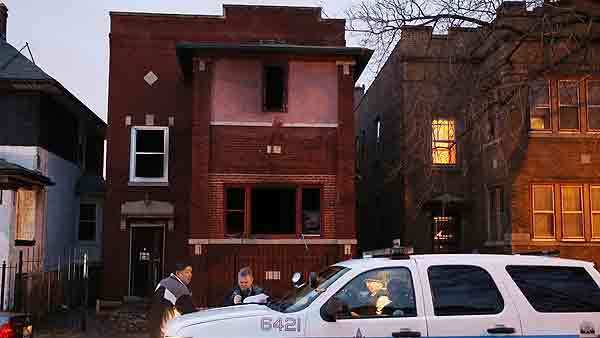
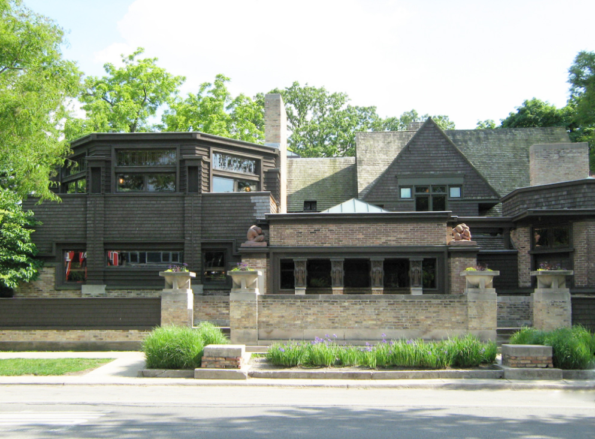
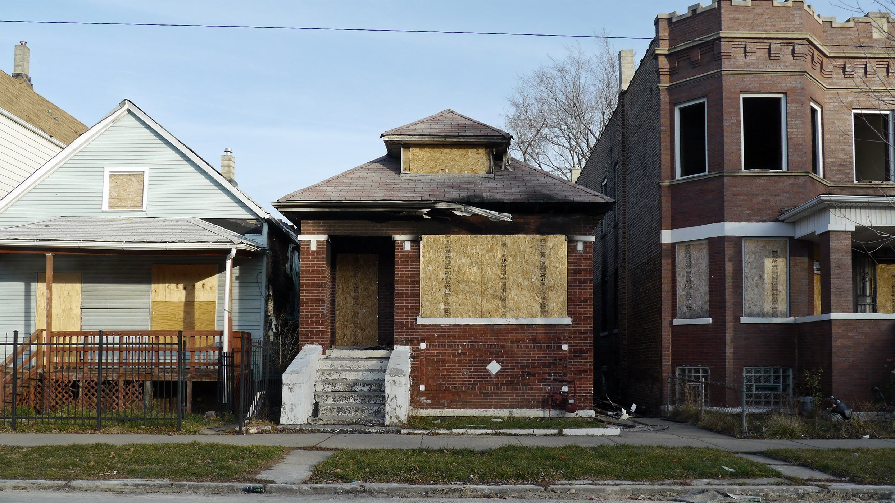
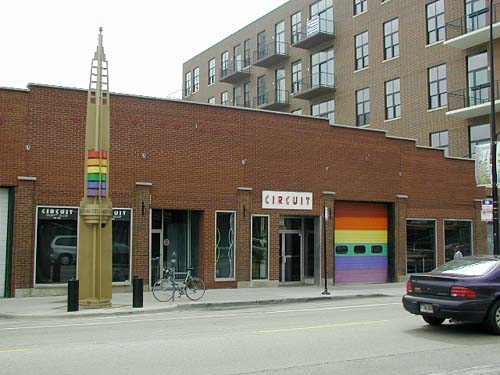

The bronzeville neighborhood is the example of how quickly,
a neighborhood in chicago can change with the help of the city.
Its gone from a unwanted place known as the lowend to a progressive
integrated neighborhood that is home a great deal of young professionals.
Located on Chicagos southside it stretches from Mccormkik place to 47th street

Austin proof of Chicago's troubled history
Located on the historic westside of Chicago Austin neighborhood is
the product of redlining and racial segregation in Chicago. The intentional
denial of real estate oppurtunities to blacks coupled with white flight led
to a working class black neighborhood that was safe and middle class until
manufacturing left the city. Poverty struck the area leading to high crime.

The prvilege of living one block west of Austin is Oak Park
Oak Park is the affluent cousin of the Austin neighborhood that is
spawned from the unfair real estate practices and lending practices
in the mid 1900s. Seperated by Austin Ave Oak Park has it own services
including police that will not help or service the neighboring people
who need them in Austin area.

Englewood a violent place called home.
Englewood is a neighborhood similar to Austin that it was once integrated
but lending and real estate practices along with a shrinking middle class
has turned this area into one of the places where chicago becomes "CHIRAQ"
With more per capita homicides than any other neighborhood and disdain
for outsiders inglewood quickly becomes dangerous for everyone including
vistors and inhabitants alike.

The pride of boystown
Known for its LGBT presence and safety boystwon housed on Chicago's
northside is home to a very open and progressive area known for its
safety. It is also proof that being a minority in Chicago is much
more dangerous than being LGBT given the crime rates for other
neighborhoods.
Products produced by chicago's pain and hopelessness
As one listens to Montana of 300 in the above video not only does one
relate to his creative metaphors related to violence. Also, listen to
his vocal inflection as the soung progresses his voice becomes extremely
intense reflecting the situation of the city of Chicago loving known
as Chiraq by the inhabitants born of this hopelessness.